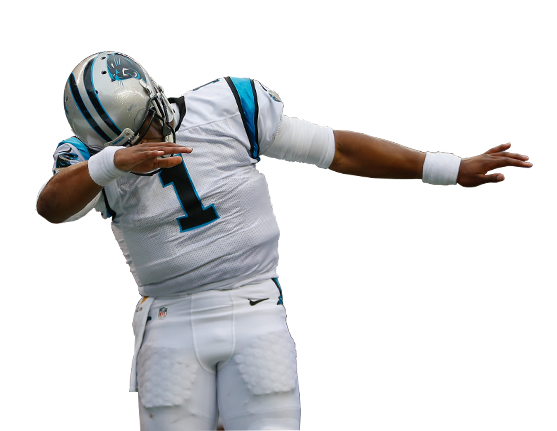

This website is dedicated to professional quarterback Cameron Newton, who plays for the Carolina Panthers in North Carolina. Born on May 11, 1989 in Atlanta, GA, Cam was the second of three boys.Cam started his college career at the University of Florida, but after issues with the team, he ended up at Auburn University in Alabama. Newton's career skyrocketed after this transfer, and he even ended up winning The Heisman Trophy his senior year. Soon after that, he was drafted in 2011 by the Carolina Panthers and has been there ever since. Cameron Newton embodies the ideal image of an athlete physically and mentally on the field. Newton possesses distinctive characteristics over his fellow NFL quarterbacks that include:
Cam's current player profile can easily be accessed at Visit Rotoworld.com! to view his stats and to critique his performance on last season. image credits:
|
 |